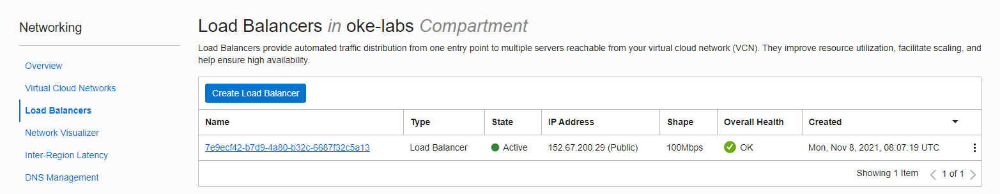
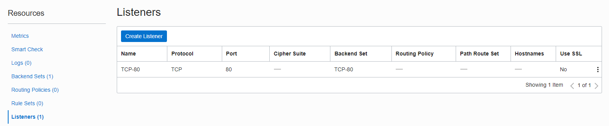
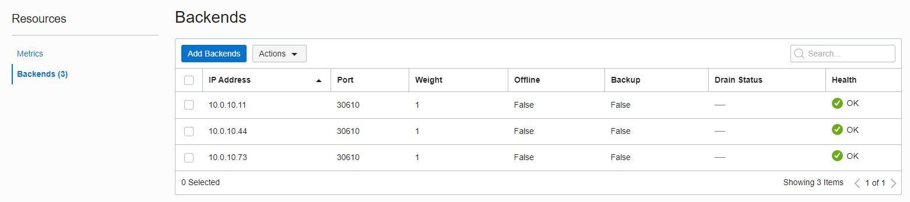
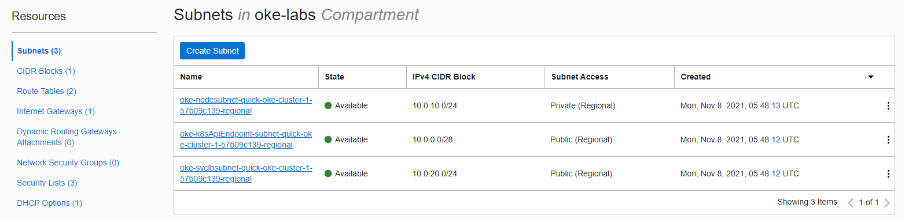
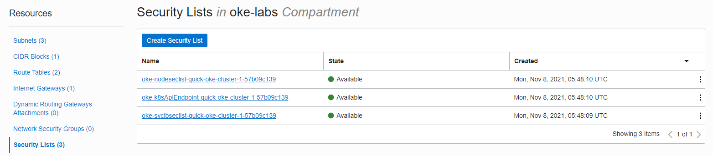
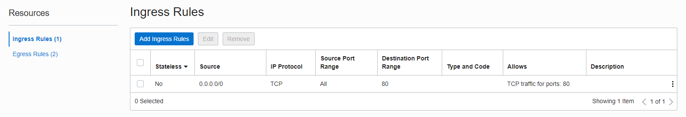
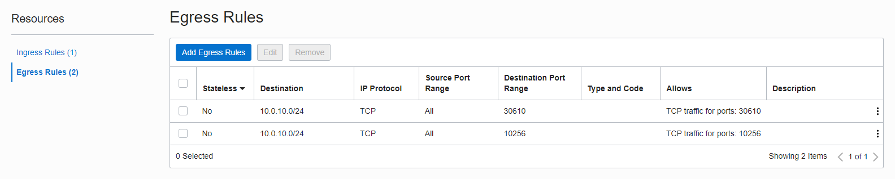
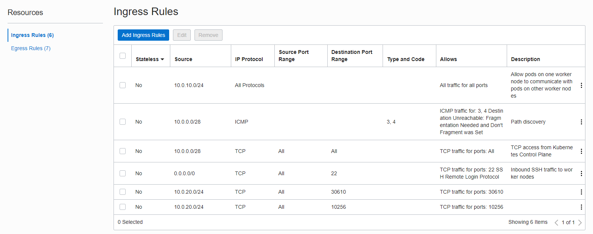

1.4 앱 배포 및 Load Balancer 사용하기
Docker Hub 이미지 테스트
-
가장 흔한 형태인 Public Container Registry에 이미지를 가져와서 OKE 클러스터에 배포를 해봅니다.
kubectl create deployment nginx-docker-hub --image=nginx:latest -
배포 결과를 확인해보면 정상적으로 배포된 것을 알 수 있습니다.
oke_admin@cloudshell:~ (ap-chuncheon-1)$ kubectl create deployment nginx-docker-hub --image=nginx:latest deployment.apps/nginx-docker-hub created oke_admin@cloudshell:~ (ap-chuncheon-1)$ kubectl get all NAME READY STATUS RESTARTS AGE pod/nginx-docker-hub-78b9999646-xgtjp 1/1 Running 0 17s NAME TYPE CLUSTER-IP EXTERNAL-IP PORT(S) AGE service/kubernetes ClusterIP 10.96.0.1 <none> 443/TCP 130m NAME READY UP-TO-DATE AVAILABLE AGE deployment.apps/nginx-docker-hub 1/1 1 1 19s NAME DESIRED CURRENT READY AGE replicaset.apps/nginx-docker-hub-78b9999646 1 1 1 20s
Load Balancer 테스트
Load Balancer 서비스 사용하기
-
클라이언트 서비스를 위해 LoadBalancer Type으로 서비스를 생성합니다.
-
서비스 생성 결과를 확인하면 아래와 같이 LoadBalancer 타입으로 생성되어 Public IP가 할당 된 것을 볼 수 있습니다.
oke_admin@cloudshell:~ (ap-chuncheon-1)$ kubectl expose deployment nginx-docker-hub --port 80 --type LoadBalancer --name nginx-docker-hub-svc service/nginx-docker-hub-svc exposed oke_admin@cloudshell:~ (ap-chuncheon-1)$ kubectl get svc NAME TYPE CLUSTER-IP EXTERNAL-IP PORT(S) AGE kubernetes ClusterIP 10.96.0.1 <none> 443/TCP 135m nginx-docker-hub-svc LoadBalancer 10.96.44.184 152.67.200.29 80:30610/TCP 49s -
서비스 주소인 Public IP로 접속하면, 연결되는 것을 볼 수 있습니다.
oke_admin@cloudshell:~ (ap-chuncheon-1)$ curl http://152.67.200.29 <!DOCTYPE html> <html> <head> <title>Welcome to nginx!</title> <style> html { color-scheme: light dark; } body { width: 35em; margin: 0 auto; font-family: Tahoma, Verdana, Arial, sans-serif; } </style> </head> <body> <h1>Welcome to nginx!</h1> <p>If you see this page, the nginx web server is successfully installed and working. Further configuration is required.</p> <p>For online documentation and support please refer to <a href="http://nginx.org/">nginx.org</a>.<br/> Commercial support is available at <a href="http://nginx.com/">nginx.com</a>.</p> <p><em>Thank you for using nginx.</em></p> </body> </html>
OCI Service Console에서 Load Balancer 확인하기
-
콘솔에서 Networking > Load Balancer 로 이동합니다. OKE 클러스터가 있는 Compartment로 이동합니다.
-
아래 그림과 같이 kubernetes 상에 생성된 서비스와 동일한 Public IP로 Load Balancer가 생성된 것을 알 수 있습니다.

-
Load Balancer 이름을 클릭하여 상세 화면으로 이동합니다.
-
상세화면에서 좌측 하단 Resources > Listeners로 이동합니다.
kubernetes에서 Load Balancer 생성시 지정한 80 포트로 Listen 하고 있는 걸 알 수 있습니다.

-
Resources > Backend Set으로 이동합니다. 생성된 Backend Set을 클릭하여 상세화면으로 이동합니다.
-
좌측 하단 Resources > Backends로 이동합니다.
세 개의 백엔드 노드의 30610 포트로 부하 분산하는 것을 볼 수 있습니다.

-
다시 터미널로 이동하여 서비스와 노드 정보를 조회합니다.
kubectl get svc kubectl get nodes -o wide-
조회결과
조회 해보면 OCI Load Balancer 가 Worker Nodes 3개로, 각 노드의 Node Port인 30610으로 부하 분산 되는 것을 알 수 있습니다. 이처럼 kubernetes에서 Load Balancer Type 서비스를 생성하면, OCI Load Balancer와 연동되어 자동으로 자원이 생성됩니다.
oke_admin@cloudshell:~ (ap-chuncheon-1)$ kubectl get svc NAME TYPE CLUSTER-IP EXTERNAL-IP PORT(S) AGE kubernetes ClusterIP 10.96.0.1 <none> 443/TCP 160m nginx-docker-hub-svc LoadBalancer 10.96.44.184 152.67.200.29 80:30610/TCP 25m oke_admin@cloudshell:~ (ap-chuncheon-1)$ kubectl get nodes -o wide NAME STATUS ROLES AGE VERSION INTERNAL-IP EXTERNAL-IP OS-IMAGE KERNEL-VERSION CONTAINER-RUNTIME 10.0.10.11 Ready node 155m v1.20.11 10.0.10.11 <none> Oracle Linux Server 7.9 5.4.17-2102.206.1.el7uek.x86_64 cri-o://1.20.2 10.0.10.44 Ready node 155m v1.20.11 10.0.10.44 <none> Oracle Linux Server 7.9 5.4.17-2102.206.1.el7uek.x86_64 cri-o://1.20.2 10.0.10.73 Ready node 155m v1.20.11 10.0.10.73 <none> Oracle Linux Server 7.9 5.4.17-2102.206.1.el7uek.x86_64 cri-o://1.20.2 -
OCI Service Console에서 Security List 확인하기
-
콘솔에서 Networking > Virtual Cloud Networks 로 이동합니다. OKE 클러스터가 있는 Compartment로 이동합니다.
-
OKE 클러스터가 사용하는 VCN으로 이동합니다.
-
Subnet을 보면 그림과 같이, 3개의 서브넷이 있습니다.
- oke-k8sApiEndpoint-subnet~~: Kubernetes API Endpoint를 위한 서브넷
- oke-svclbsubnet-~~: Load Balancer가 사용하는 서브넷
- oke-nodesubnet-~~: Worker Node 들이 사용하는 서브넷

-
Resources > Security Lists로 이동하면, 위 3개의 서브넷이 사용하는 3개의 Security List가 있습니다.

-
Load Balancer용 서브넷 확인
먼저 oke-svclbsubnet-~~ 의 상세화면으로 이동합니다. Ingress/Egress Rule을 확인해 보면, 외부에서 80 포트로 수신하고, Worker Node들의 Node Port인 30610로 송신할 수 있도록 자동으로 추가된 것을 볼수 있습니다.


-
다시 VCN 상세 화면으로 이동하여, Worker Nodes용 서브넷을 확인합니다.
OCI Load Balancer에서 Node Port: 30610으로 요청을 수신할 수 있도록 자동으로 규칙이 추가된 것을 볼수 있습니다.

-
위와 같이 OKE 클러스터에 kubernetes 명령으로 Load Balancer 서비스 타입을 생성하면, 그에 따라 OCI Load Balancer가 생성되고, 관련 Security List에도 등록되는 것을 알 수 있습니다.
** 이 글은 개인으로서, 개인의 시간을 할애하여 작성된 글입니다. 글의 내용에 오류가 있을 수 있으며, 글 속의 의견은 개인적인 의견입니다. **